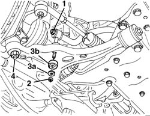
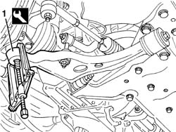
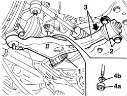
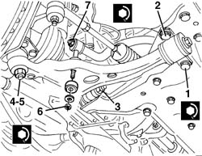

4410B44 FRONT SUSPENSION LOWER TRACK CONTROL ARM - R.R.
- Path
- Procedures > 44 SUSPENSION AND WHEELS > 4410 FRONT SUSPENSION > 4410B FRONT SUSPENSION WISHBONES > 4410B44 FRONT SUSPENSION LOWER TRACK CONTROL ARM - R.R.
- Kind
- repair procedure (removal / refitting; the operation number is the code)
- Applies to
- all engines; all production periods
- Interactive page
- https://sloeber94.github.io/elrnDB-fDct/en/#/244001181
Applies to: all engines; all production periods
 Removing
Removing
 Refitting
RefittingOp. 7055B54 UNDER-ENGINE GUARD - R R

Applies to: all engines; all production periods

Applies to: all engines; all production periods

Applies to: all engines; all production periods
Refitting
RemovingOp. 7055B54 UNDER-ENGINE GUARD - R R
Op. 4450A20 FRONT WHEEL CASTER
